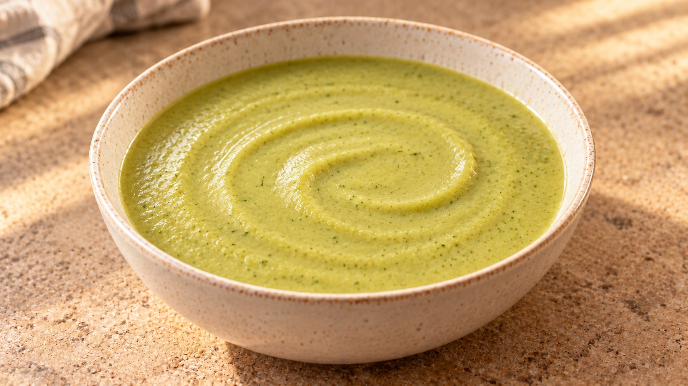
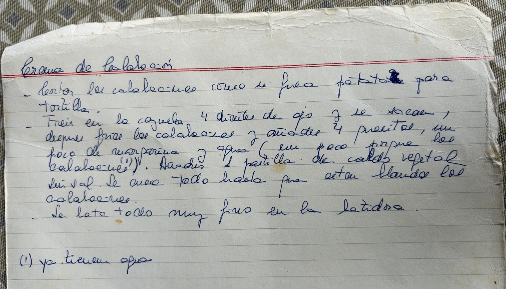

Crema de calabacín
💚 Una de las cremas clásicas de Marisa, con la piel del calabacín y un quesito por persona.

Ingredientes
- 600 g de calabacín
- 2 dientes de ajo
- 2 quesitos
- 1 cucharada de aceite de oliva (15 ml)
- 100 ml de agua, aproximadamente
- ½ pastilla de caldo vegetal
- Pimienta (opcional)
Preparación
Lava bien los calabacines y conserva la piel. Retira los extremos y córtalos en láminas finas, como las patatas para tortilla. Pela los ajos y aplástalos ligeramente.
Calienta el aceite en una cazuela a fuego medio-bajo. Añade los ajos y deja que se doren suavemente, sin oscurecerse. Retíralos: su sabor queda en el aceite.
Incorpora el calabacín y cocina a fuego medio, removiendo de vez en cuando, hasta que se ablande y empiece a soltar agua. No hace falta dorarlo.
Añade los quesitos, la media pastilla de caldo desmenuzada y 100 ml de agua. Mezcla, tapa y cocina a fuego suave hasta que el calabacín esté completamente blando. Remueve alguna vez para evitar que el queso se agarre al fondo.
Aparta del fuego y tritura hasta obtener una crema muy fina. Si queda demasiado espesa, añade agua caliente poco a poco. Prueba antes de añadir sal: el caldo y los quesitos ya aportan. Termina con pimienta si te gusta.
Claves
El calabacín aporta mucha agua: empieza con poca y ajusta después de triturar. Para una textura fina, comprueba que la piel esté tierna antes de apagar el fuego.
La receta original de Marisa

Transcripción del manuscrito
Crema de calabacín
- Corto los calabacines como si fueran patatas para tortilla.
- Freír en la cazuela 4 dientes de ajo y se sacan, después freír los calabacines y añadir 4 quesitos, un poco de margarina y agua (un poco porque los calabacines (1)). Añadir 1 pastilla de caldo vegetal. Sin sal. Se cuece todo hasta que estén blandos los calabacines.
- Lo bato todo muy fino en la batidora.
(1) Ya tienen agua.
En casa se conserva la piel, se usa un quesito por persona y la margarina se ha sustituido por aceite de oliva. La ficha adapta las cantidades para dos raciones.
Fuente
Receta de Marisa, a partir de su manuscrito y de cómo se prepara ahora en casa.